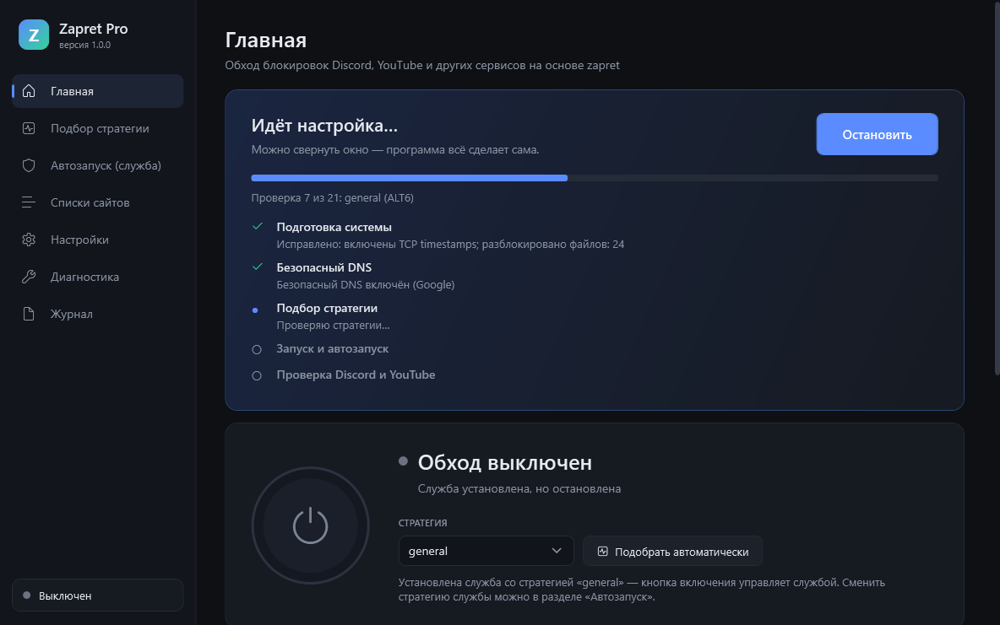
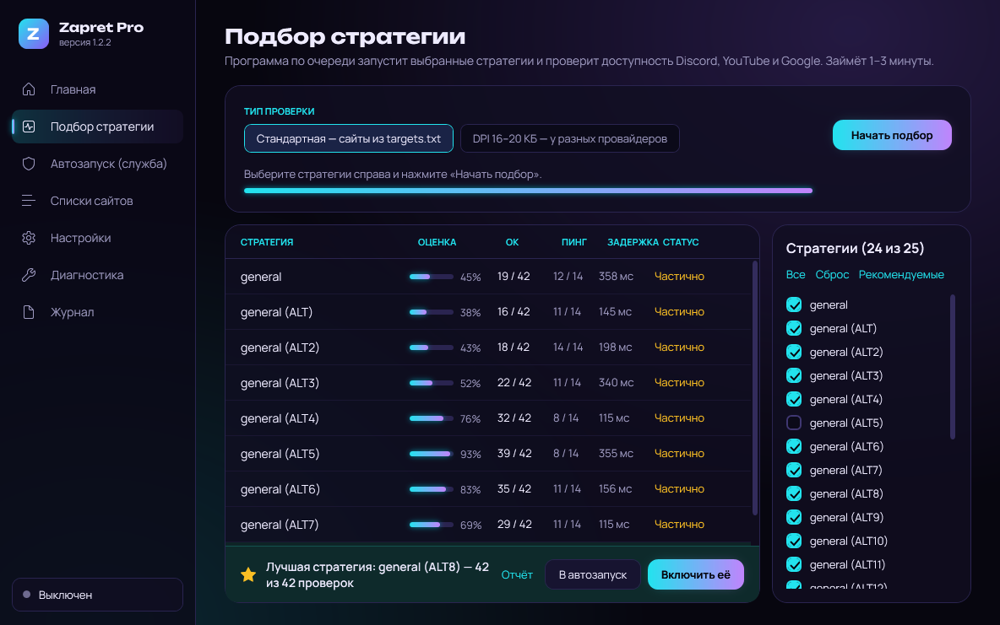
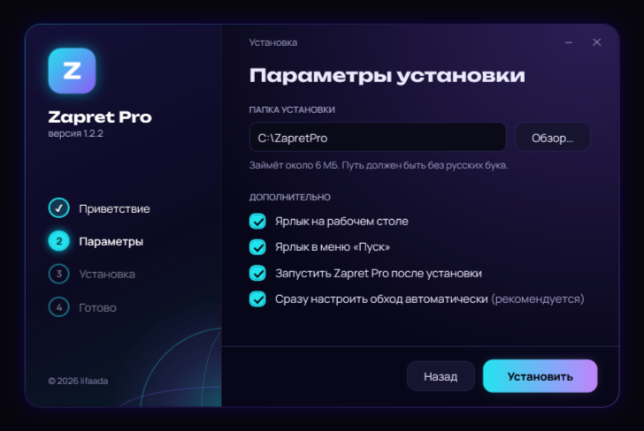
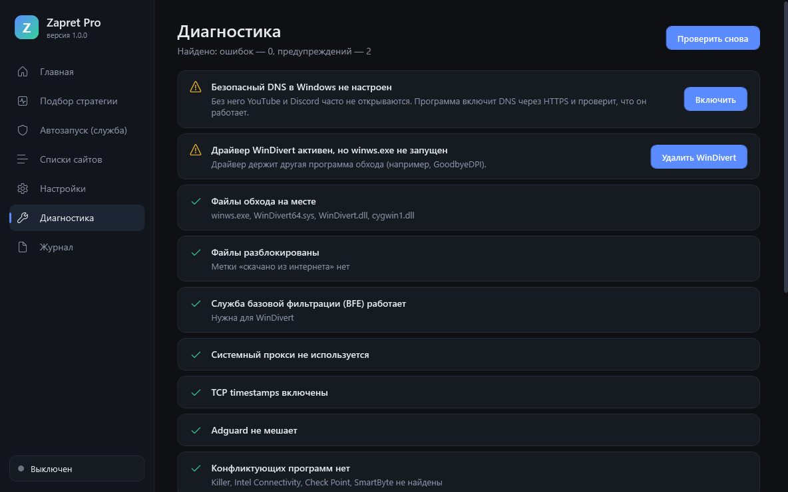

Discord и YouTube
снова работают
Zapret Pro сам подберёт настройки под вашего провайдера, включится вместе с Windows и будет следить, чтобы всё работало. Нажали одну кнопку — и забыли.

Три шага — и готово
Ничего не нужно настраивать руками: ни DNS, ни файлы, ни службы. Программа сделает всё сама.
Скачайте установщик
Нажмите «Скачать» и откройте файл ZapretProSetup.exe.
Нажмите «Установить»
Разрешите запуск от имени администратора — это нужно, чтобы обход работал на уровне системы.
Подождите 1–3 минуты
Программа проверит все способы обхода, выберет лучший для вашего интернета и включит его.
Работает само
Всё, что раньше делали руками по длинной инструкции, теперь происходит автоматически.
Сам подбирает настройки
Проверяет все стратегии обхода на Discord, YouTube и Google и включает ту, что лучше работает у вашего провайдера.
Обновляется сам
Новые версии ставятся автоматически за несколько секунд. Перестало открываться — одна кнопка «Проверить заново» подберёт новые настройки.
Включается с Windows
Обход запускается при загрузке компьютера, ещё до входа в систему. Открывать программу не нужно.
Безопасный DNS
Включает шифрование DNS, чтобы провайдер не подменял адреса сайтов. Если его заблокируют — интернет не пропадёт.
Чинит проблемы
Находит конфликтующие программы и неправильные настройки Windows и исправляет их одной кнопкой.
Всё обратимо
При удалении программа убирает за собой службы и драйвер и возвращает настройки DNS как было.
Как это выглядит
Понятный интерфейс на русском языке. Для тех, кто хочет разобраться, — подробные настройки.



Частые вопросы
Если чего-то не нашли — откройте в программе раздел «Диагностика».
Windows пишет «Система Windows защитила ваш компьютер»
Так Windows реагирует на любые программы без платной цифровой подписи. Нажмите Подробнее, затем Выполнить в любом случае.
Антивирус ругается на программу
Для обхода нужен драйвер WinDivert — он перехватывает сетевые пакеты, поэтому некоторые антивирусы относятся к нему настороженно. Это тот же драйвер, что используют оригинальные zapret и GoodbyeDPI.
Добавьте папку программы (по умолчанию C:\ZapretPro) в исключения антивируса и установите программу ещё раз.
Если Защитник Windows пишет об угрозе: откройте Безопасность Windows → Защита от вирусов и угроз → Журнал защиты, выберите запись про Zapret Pro и нажмите Действия → Разрешить.
Это VPN? Мой трафик куда-то уходит?
Нет. Zapret Pro — не VPN: трафик идёт напрямую, как обычно, без чужих серверов. Программа только меняет форму пакетов так, чтобы оборудование провайдера их не распознало. Поэтому скорость и пинг не падают.
Не заработало — что делать?
Откройте программу и нажмите Проверить заново — она подберёт настройки ещё раз. Затем загляните в раздел Диагностика: часто мешают VPN, Adguard или «игровые» сетевые утилиты (Killer, SmartByte).
Если провайдер блокирует вообще всё — попробуйте позже или с другим подключением.
В Discord пропадает голос, пинг 2000
Так бывает, когда провайдер начинает узнавать способ, которым программа прячет голосовой трафик. Нажмите на главной Пропадает голос в Discord (или то же в меню значка у часов) и перезайдите в голосовой канал. Программа сменит способ за пару секунд и запомнит рабочий. Не помогло — нажмите ещё раз, вариантов несколько.
Как обновлять программу?
Никак — она обновляется сама. Раз в несколько часов программа проверяет сайт и, если вышла новая версия, ставит её за несколько секунд. Ваши настройки и списки сайтов сохраняются.
На каких компьютерах работает?
Windows 7 SP1, 8, 8.1, 10 и 11 — только 64-битные (так устроен сам zapret). Узнать разрядность: Win+Pause или «Параметры → Система → О программе».
Работает ли с Telegram и Spotify?
Главная задача программы — Discord, YouTube и сайты из списков zapret. Для веб-версии Telegram в настройках программы есть кнопка обновления файла hosts. Spotify сам заблокировал пользователей из России — обход здесь не поможет.
Как удалить?
«Параметры → Приложения → Zapret Pro → Удалить» или ярлык «Удалить Zapret Pro» в меню «Пуск». Программа уберёт службу и драйвер и вернёт настройки DNS как было.